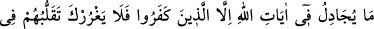

karşılaşan iki denizin arasını açmış da, aralarında bir berzah bulunduğu için,
birbirlerine karışmaz olmuşlardır. İşte bu durumda ilâhî hidâyet taraflarından bir inâyet
rüzgârı esip de iki deniz dalgalandığı zaman, söz konusu berzah bu iki denizin
çarpışmasıyla yok olup gider ve böylece hepsi tek bir deniz hâlini alır. Ki bu deniz,
“O’ndan başka ilâh yoktur ve dönüş sadece O’nadır” denizidir. Dönüş sadece O’na
olunca, O’na doğru yürüyüş de bambaşka bir hoşluk ve güzellik kazanır.
Ömer bin Hattâb (r.a.)’ın din kardeşi dediği bir arkadaşı vardı. Akıllı, dindar,
kullukta samimi birisiydi. Akşamleyin birisi o arkadaşının yanından gelmişti. Ömer
(r.a.) arkadaşının durumunu o gelen kimseye sordu: “Kardeşimiz ne yapıyor, hali
nasıldır?” Onun yanından gelen kişi “O iblisin kardeşidir, senin kardeşin değil. Yâni
onun yolunda bir gevşeklik var; içkiye başlamış. Her türlü kötülüğü işliyor” karşılığını
verdi. Ömer şöyle dedi: “Geri döndüğünde beni haberdar et de ona bir mektup
yazayım.” Sonra şu mektubu yazdı: “Bismillâhirrahmânirrahîm. Allah’ın kulu Ömer’den
filân oğlu filâna. Selâmun aleyküm. Kendinden başka ilâh olmayan Allah’a hamdettiğimi
sana bildiririm. O, günahı bağışlayan, tevbeyi kabul eden, azabı çetin, lütuf sahibidir.
O’ndan başka hiçbir ilâh yoktur, dönüş ancak O’nadır.”
Mektup o kişiye ulaşınca, “Allah’ın kelâmı doğrudur, Ömer’in nasihati güzeldir” dedi.
Çok ağladı, tevbe etti, hâli iyileşti.
Hz. Ömer daha sonra: “Sapmakta bulunan bir kardeşinize siz de böyle davranın: Onu
düzeltmeğe çalışın Şeytan’a yardımcı olarak onun aleyhinde bulunmayın” demiştir ki
onun bu ifadesinde, mü’min bir kardeşini tek bir günahı yüzünden hemen
terkedivermeyip aksine, ona nasihat etmek lâzım geldiğine işaret edilmektedir.
4. İnkâr edenler müstesna, hiç kimse Allah’ın âyetleri hakkında tartışmaz.
Onların şehirlerde (rahatlıkla) gezip dolaşması seni aldatmasın.
“Allah’ın âyetleri üzerinde tartışmaya girişmek;” “Cidâl/Tartışma,” karşısındakiyle
çekişip onu yenmeye çalışmak üzere yapılan bir müfâvaza, yâni görüşmedir. Farsça
ifadesiyle, “birisiyle iş tutmak” demektir.
Cidâl lafzı aslında, “ipi sağlam bir şekilde eğip büktüm” mânâsındaki “
ifâdesinden gelir. Buna göre, mücâdele eden iki taraf birbirini görüşlerinden
vazgeçirmeye, biri diğerini eğip bükmeye çalışmış olmaktadır.
Ebu’l-Âliye’ye göre bu âyet, (Kur’an’la) dalga geçenlerden biri olan Hâris b. Kays